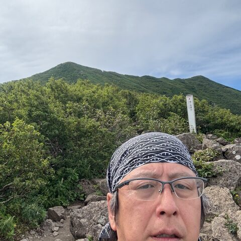

Takatomo Fujisawa
DDBJ (unofficial), BSI, NIG · Japan
Oversees development and operation of all DDBJ databases and services — assembled sequences, SRA/GEA, BioProject/BioSample, MetaboBank, JGA. Applying AI/LLM to database repositories; advancing the RDF Portal with dynamic ID relationships and tools such as Bio-MCP-blast.
Topics: Databases, LLM/AI, RDF/SPARQL, Genomics, FAIR/Standards
Codes in: Perl, Ruby, SPARQL